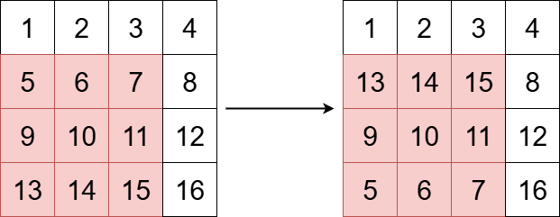
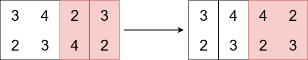

| Category | Difficulty | Likes | Dislikes |
|---|---|---|---|
| Algorithms | Easy | 50 | 1 |
array | two-pointers | matrix
You are given an m x n integer matrix grid, and three integers x, y, and k.
The integers x and y represent the row and column indices of the top-left corner of a square submatrix and the integer k represents the size (side length) of the square submatrix.
Your task is to flip the submatrix by reversing the order of its rows vertically.
Return the updated matrix.
Example 1:

Input: grid = [[1,2,3,4],[5,6,7,8],[9,10,11,12],[13,14,15,16]], x = 1, y = 0, k = 3
Output: [[1,2,3,4],[13,14,15,8],[9,10,11,12],[5,6,7,16]]
Explanation:
The diagram above shows the grid before and after the transformation.
Example 2:

Input: grid = [[3,4,2,3],[2,3,4,2]], x = 0, y = 2, k = 2
Output: [[3,4,4,2],[2,3,2,3]]
Explanation:
The diagram above shows the grid before and after the transformation.
Constraints:
m == grid.lengthn == grid[i].length1 <= m, n <= 501 <= grid[i][j] <= 1000 <= x < m0 <= y < n1 <= k <= min(m - x, n - y)